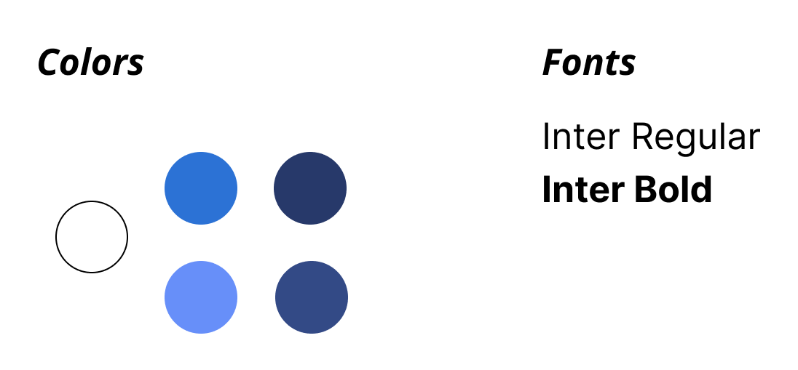
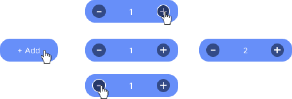
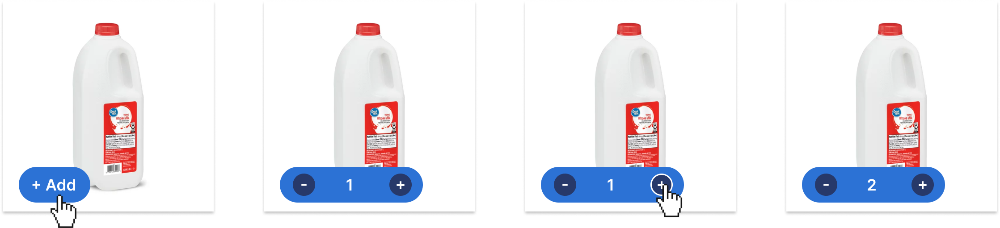
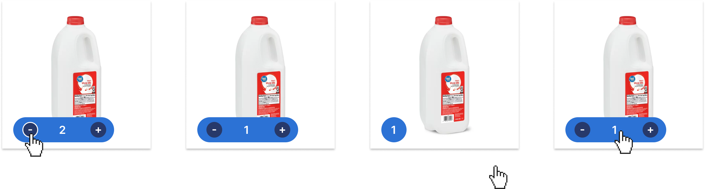

The Overview
The Microinteractions Project is a project in which I was tasked with updating a currently existing microinteraction and program it using HTML/CSS and JavaScript. For this project, I chose to update Walmart’s add item to cart button microinteraction. I found that the current design lacked transition between button states and would change abruptly and that other interactions like hovering over the plus sign to add a new interaction would not change back to their default state after the interaction had ended.
At the end of 10 weeks and 3 phases of the project, I designed and programmed a microinteraction system which included 8 triggers that together created an elevated and more intentional user experience for the Walmart customer.
Context and Challenge
This project was a solo project and spanned about 10 weeks. Each week was dedicated to different phases of the project including the alpha description and build, beta description and build, and final description and build. With each phase also came refined detail and more intentional triggers and mode to make the microinteraction interesting and delightful.
The main problem found in Walmart’s microinteraction when the user adds an item to the cart was the lack of transition between the default state and the state when the user has added the item. The button simply jumped from one state to the other, which seemed very abrupt and jolting.
Additionally, the plus sign would stay stuck in it’s hover state after the user added an item to the cart and would not change back to the default state, even when the user was hovering over the minus sign. This issue also persisted in the minus sign when the user clicked on it to decrease the amount of items that they wanted.
Because of these issues, the main goals for this project were:
- To create smooth, animated transitions between each 3 button states (the default state, the state when the user is adding the item to the cart, and the state when the user clicks away from the product card)
- To have each interaction only occur when they are triggered. For example the hover states will only occur when the user is hovering on the element and it will stop when the user hovers off the element.
Process and Insight
This project was developed in 6 phases: the alpha description, alpha build, beta description, beta build, final description, and final build.
In the alpha description phase, I identified the key issues in Walmart’s current button and wireframed what my initial solution to the problem. In this version, I had the button go to a state that told the user that they added an item to the cart before showing the number of items that they added. However, I ultimately found that this middle state may become annoying and redundant for some users, so I decided to leave it out for the rest of my phases.
I additionally created a style guide for the project during this phase. I identified Walmart’s fonts and also their blue color scheme to use during my design process
In the alpha build phase, I programmed the first set of triggers for my design. I developed a function where the button would grow to the left when the user clicks on the “+Add” button. The button would also change to include a plus sign, minus sign, and the total number of items included when clicked. With this phase, however, I noticed that the hit boxes for the plus and minus sign were too small, and the user was able to have a negative total. I made note of these bugs which would later be fixed in the beta build.
During the beta description phase, I focused on describing and designing the functionality of the plus and minus sign. I designed a hover state which would make each button’s border become white and I also increased the size of the hit box.
When developing the beta build, I added the design changes noted in the beta description and also fixed the bugs that were found in the alpha build. I noticed that the plus and minus sign moved slightly when the total number increased to the 10’s. This was later fixed in the final build.
In the final description, I designed a feature where the user could click anywhere on the screen that wasn’t the button or product and the button would minimize to a circle that contained the total number of items. I also designed a product card to further convey where this button would be on Walmart’s website and to give it more context.
 The Solution
The final build contained a product card and an add to cart button inside of the card. Additionally, all 8 triggers were included: clicking on the button, hovering on/off the button, clicking on the plus sign, clicking on the minus sign, hovering on the plus sign, hovering on the minus sign, clicking anywhere on the screen outside of the product card, and clicking on the total number circle.
Together, these triggers helped shape a uniform and delightful design that elevated Walmart’s current add to cart button microinteraction. For example, the hover states helped users understand what was clickable and what would happen if the element was clicked. The transition between button modes was smooth and was not as abrupt as the original. Additionally, each feature only occurred when triggers and did not become “stuck” in its triggered state, which was an issue in the original design as well.
If I were to work on this project in the future, I would reprogram the plus and minus signs to appear after the button had grown since they currently appear while the button is growing.
The Results
I found this project to be an overall success. It allowed me to increase and apply my knowledge in JavaScript to create a meaningful microinteraction. I also was able to explore what it means to have an intentional and meaningful microinteraction and how that can transform a user’s experience with a product. Additionally, I was able to meet by two goals for this project. I created smooth transitions between each 3 button modes and I made sure that the interactions only occurred when triggered and were not “stuck” at any point during the user flow. I also found that I enjoy breaking projects into alpha, beta, and final phases as it gives me the chance to pace myself and also slow down and see the feasibility of what I want to do.